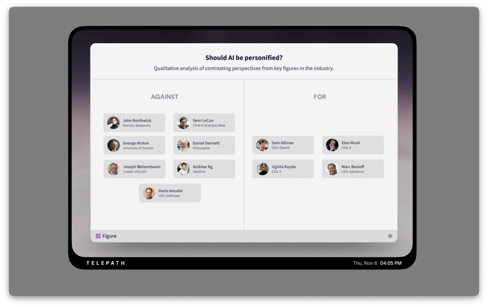
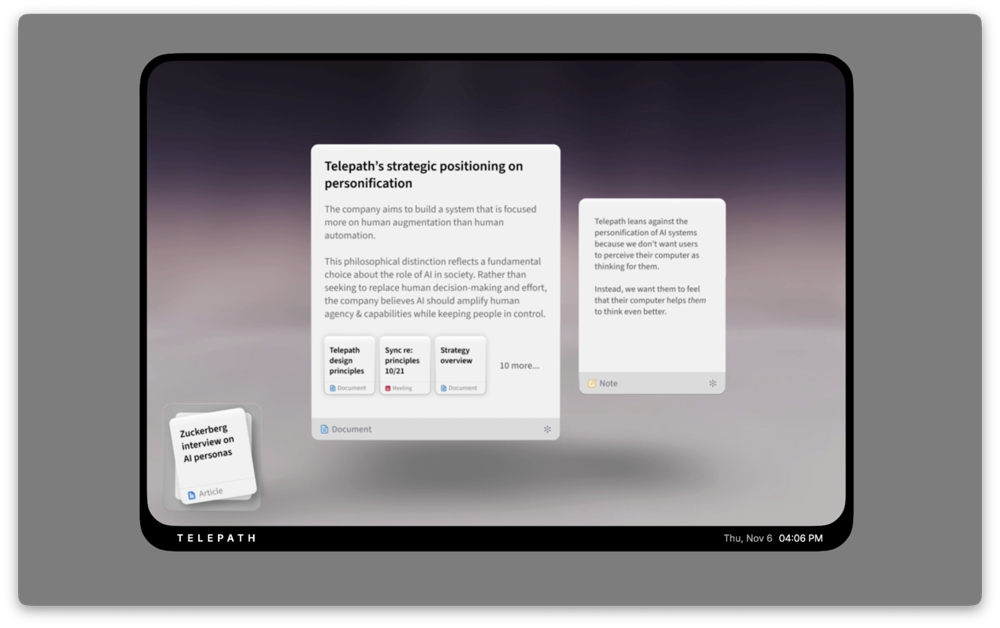
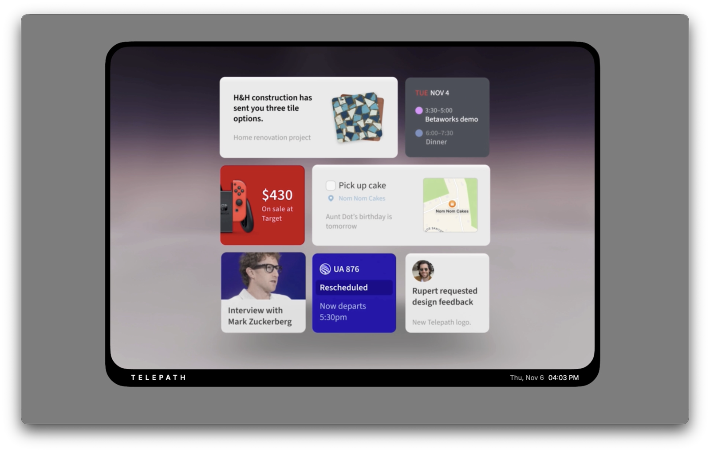

February 10, 2026
Demoing the AI computer that doesn't yet exist
What happens if you take the idea that AI is going to revolutionize computing seriously?
You might argue we’re already doing this as an industry: we’ve spent untold billions on frontier models; hype is at fever-pitch; and it seems every app on your computer now has a chat sidebar, soon to be home to an uber-capable AGI.
But I fear we are still missing answers to some basic questions, like: what does an AI-native computer actually look like? What does it feel like? How do I use it? With a truly revolutionary technology, iteration can only take you so far — in order to leap towards this future as an industry, we need a clearer vision of it.
I’ve seen the power of collective imagination that a well-defined vision can unlock. At Google Creative Lab, demos I gave turned into experiences we shipped to millions of users. At Adept, a prototype our 3-person design team showed one Friday afternoon led to a tectonic shift in company direction by Monday morning.
So a few months ago, we at Telepath set out to create a compelling demo of what an AI-first personal computer will actually look like. (We’re trying to build one, after all.) My co-founder Stephen Hood presented it at Betaworks this past November, and you can watch it here:
In our demo, Stephen plays a knowledge worker with five minutes to spare. He checks some notifications, then follows a thread of research before landing on an article he wants to write and drafting an outline. This is a pretty typical knowledge work task — synthesizing a large amount of information down into a usable artifact.
However, the way Stephen approaches this problem with the Telepath Computer is anything but typical. Instead of dealing with various engagement-baiting feeds of information, multiple siloed apps, sixty browser tabs, and a whole lot of clicking and typing, he calmly navigates through a dynamic interface that helps him make sense of his information and achieve his goal.
Let’s break down some of the key ideas behind this demo, and why we think they are an inevitable part of our future.
The generative interface
The Telepath Computer has no apps. Instead, its interface is generative, meaning that a significant portion of the user interface is synthesized and/or composed on the fly in response to user intent.
The primary benefit of a generative interface is that it closes the gap between intent and outcome. For many tasks, it’s easy to express our goal in natural language and have the computer work out the exact steps to achieve it. It’s much harder to find the right app or multiple apps and perform all the steps yourself (assuming the software actually works the way you need).[1] A generative interface means the space of possible actions, and the possible ways information can be displayed, is infinite.

This doesn’t come without challenges: the greatest risk for a generative interface is disorienting the user. Good software design gives users a conceptual model of the system, so they can accurately predict what will happen when they perform an action[2]. If we allow an agentic system free reign over our computer screens without structure or constraints, aren’t we setting our users up for a chaotic and unpredictable environment? How will they know what they can do, and what will happen when they do it?
One solution is to package up generative software in app-like bundles, and try to keep the same metaphors we have today. (In other words, a generative UI just means anyone can generate their own app.) This approach is tempting, and we’re already seeing several startups coalescing around it. However, it’s ultimately a skeumorphism that commits us to the familiar idea of software as discrete shippable things, instead of something that exists everywhere all at once.
Instead, the Telepath Computer interface solves this problem by having well-defined “laws of physics”. It provides a logical structure: a magnetic 3D space of cards, upon which generative interfaces are rendered. Each card adheres to the same conventions and behaves the same way within the space. Cards can be grouped into workspaces and stacked into collections to revisit later. Each has a command bar at the bottom, where users can discover further functionality.
While this structure was sufficient for the demo workflow, it must ultimately extend into many more areas. How do I organize and file away objects long-term? When the system kicks off an asynchronous task, how do I see it and know its status? How do I interact with specialized interfaces, like for editing video or creating a CAD drawing? These questions were deliberately out of scope for the demo, but we’re already addressing some of them as we begin to translate our vision into working software.
Voice & multi-modality
If there’s one thing that came up overwhelmingly when we surveyed science fiction, it’s voice input. From Her to Star Trek, it’s clear we humans love to fantasize about talking to our computers. It turns out there are good reasons for this (beyond being more fun to watch than someone typing).
Voice gives us an additional stream of information for input, one that can happen concurrently with direct manipulation using a keyboard, mouse, or touch. With the Telepath Computer, you can touch and type for tasks where control and accuracy are important, while simultaneously using your voice to direct the computer. This mimics our natural behaviour in the physical world: for example, imagine cooking a meal with family or friends, asking someone to fetch the basil or chop the onions while your hands are busy with the pasta.
Up until now, voice has been unusable for most serious computing tasks. But with near-perfect speech recognition[3], and agents that can interpret our intent and act for us, we can finally bring this multi-tasking to our digital world too. Already our user research shows participants are increasingly comfortable with voice, using it as a high-bandwidth, low-structure input mode, dictating thoughts or instructions to then process with language models. I expect this usage to expand over time, as we design systems specifically for it[4].

Using voice as an additional information stream is also useful when it comes to output. The Telepath Computer speaks through voice, while simultaneously displaying documents and information for the user to reference and interact with. This “show and tell” approach is also present in how we tend to communicate complex information in the real world: sketching on a napkin as we discuss a problem with a colleague over dinner; design teams assembling stickies while talking about user feedback; pulling up maps and hotels on your laptop while planning a group vacation.
The benefits expand dramatically when your computer is also context-aware. A context-aware computer knows where you are and what’s available to you: step back from the screen or pick up a sketchbook and it shifts to voice; go for a walk and you can work as effectively as when you’re sitting at a desk. Generative software can morph itself into whatever modality and form is suitable for the current situation, which has profound implications not just for productivity but for accessibility and quality-of-life too.
Deep personalization
At the outset of the demo, Stephen says to the computer: “Hey, catch me up.”
To respond to this effectively, the computer needs a model of the user and their information landscape. This is deep personalization: the ability to make sense of the user’s digital world, construct a model of them, and assess all new information and all generated interfaces against that model.

One discovery we made during our design process was that deep personalization is not just a useful feature for agentic action-taking; it’s also a requirement for an effective generative interface. Our interfaces today show us everything: every email, message, note, webpage, document, and notification, constantly pouring unfiltered into our screens for us to handle manually[5]. But a generative system must make editorial decisions about what to include, what to leave out, and how to present information to maximally align with the user’s goals.
In order to do that effectively you need a deep understanding of the user, otherwise the system is bound to make decisions that either remove important information, or highlight something irrelevant. As such, any good generative UI will depend on a sophisticated user model with sufficient depth that it can accurately and predictably make these predictions. This goes beyond simply “memory”, instead pointing towards something that is constantly updating itself based on new information and past performance, that understands what’s recent and what’s outdated, and that can represent different structured facets of the user’s world like ongoing projects, relationships, and personal preferences.
Without this, a generative interface cannot truly close the gap between intent and outcome. It can only guess.
Process & acknowledgements
We created this demo through a process that combined equal parts evidence and imagination[6]. First we interviewed computer users to identify problems that presented themselves as fundamental to the computer use generally, then zeroed in on specific knowledge worker use-cases. We combined insights from these interviews with our own forecasts of technology trends (especially around voice input and local models), researched prior art, and watched a bunch of sci-fi. Then we began sketching the first concepts and iterating on our designs with user feedback, finally partnering with Territory Studio for the animation and visual effects.
It’s important that I acknowledge some of the work and people that inspired us during our research:
- The Apple Knowledge Navigator concept, a great example of the creative power a product demo can have. It predicted the web, voice assistants, and touch-screen tablets long before any of these existed. (We have yet to innovate on putting bow-ties on agents, but it’s surely just a matter of time.)
- Mercury OS by Jason Yuan, a speculative vision for a fluid, intent-driven operating system based around modular panels that was well ahead of its time, and influenced Telepath’s card metaphor.
- Desktop Neo by Lennart Ziburski, which was a great example of how to take emerging capabilities (multi-touch, voice control) and design for them from first principles
- The film Her. Not for its depiction of AI (some things we don’t want to emulate…), but rather its humanistic, depth-based, textural screen design which influenced our visual language for the demo.
- Matt Webb, whose thinking on conversational interfaces helped shape our “show and tell” metaphor and our emphasis on using voice and direct manipulation in concert.
Also thanks to Scott Jenson, and Josh & Stephen my co-founders, for their helpful feedback along the way.
I hope this work encourages others in the industry to consider an optimistic vision of what they want this technology to look like in a user’s life — with more clarity and fidelity than “AGI” — and to share it broadly to the world so we can discuss and create this exciting future together, in the open.
If you’d like to follow along with Telepath’s progress on making our vision a reality and get access to early releases, you can do so here.
If you want proof of this, ask your nearest computer programmer how much code they write themselves vs. how much they now generate using natural language instructions. ↩︎
This is well-documented, most notably in the foundational text on experience design The Design of Everyday Things by Don Norman (2013). ↩︎
On clean English datasets, we’re now sitting at a word error rate for standard benchmarks of roughly 1% (Rong et al., 2025) compared to 4-5% for humans (Radford et al., 2022) ↩︎
Sceptics will note that voice has some important drawbacks, the most acute being that you can’t use it while other people are within earshot without them hearing everything you say. However, the advantage of having another simultaneous input stream is so great that I imagine we will find techical solutions to this instead of remaining bound to our keyboards. A recent acquisition by Apple (MacRumours) suggests I’m not alone. ↩︎
One exception is social media, though this is done in a very limited domain and with an algorithm that’s entirely out of our control. Another reason why we must ensure this new generation of personal computers answers only to users. ↩︎
With evidence alone, you can only iterate. With imagination alone, you are only guessing. ↩︎